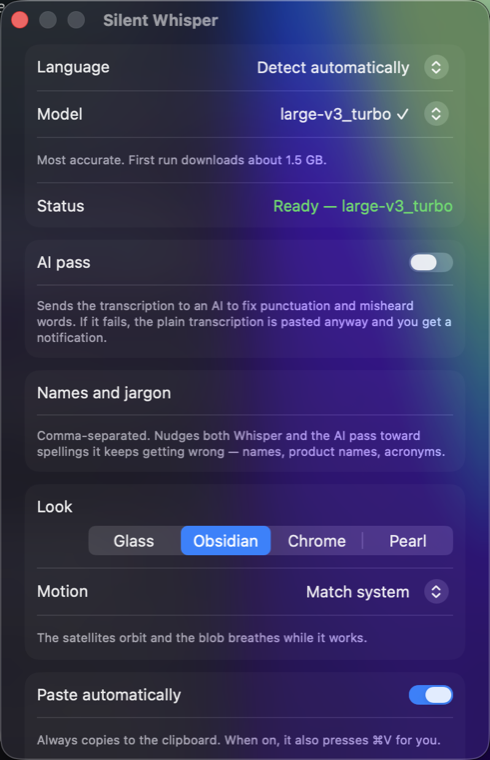

Hold a key, say what you mean, and the words land where your cursor already is.
How it works
The blob appears when something is happening and fades out when the text has landed. The rest of the time your screen is your own.
Hold the right option key. The core swells with your voice so you can see it is hearing you.
Whisper runs on the Neural Engine. A few seconds of speech takes well under a second.
An optional AI pass fixes punctuation and misheard names. Turn it off and this step vanishes.
The text is copied and pasted into whatever had focus. Then the blob gets out of the way.
Whisper runs locally on the Neural Engine. There is no account, no subscription, and no server to trust. Turn on the AI pass and only the finished text is sent, to a provider you pick with a key you own. Leave it off and nothing goes anywhere.

Install
Grab the .dmg from the releases page and drop Silent Whisper into Applications. It is signed and notarized by Apple, so it opens without a warning.
macOS asks on first launch. Accessibility is what lets the hotkey work anywhere and lets the app paste for you.
⌥ and talkThe first run downloads a speech model, and you can keep talking while it does. After that it is instant, and offline.